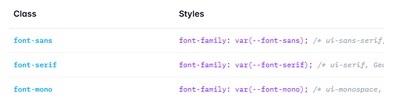
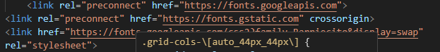
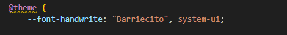
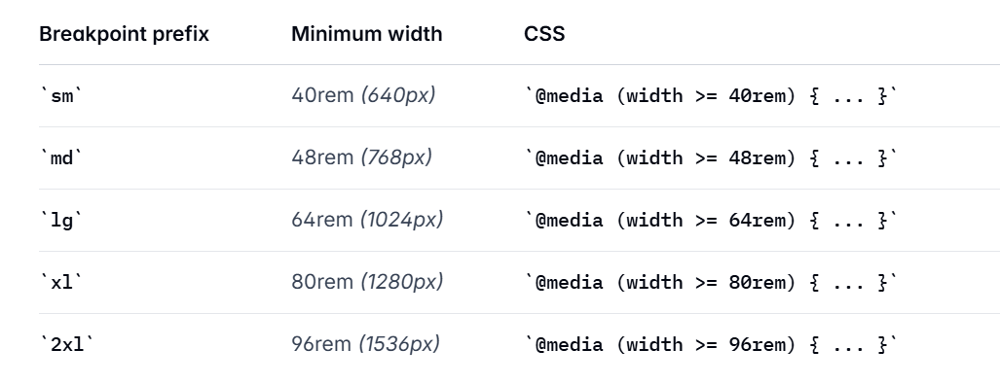
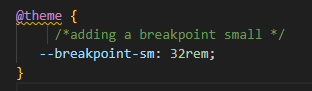
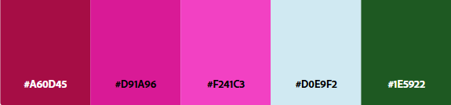
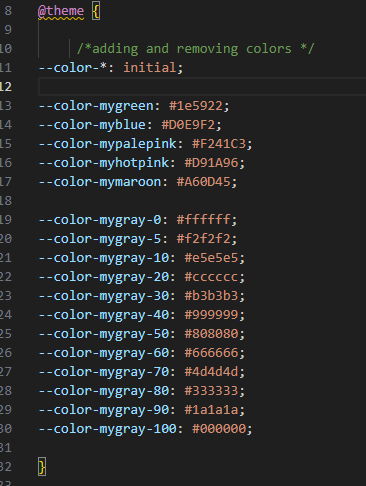

Tailwind comes with 3 built in font families (sans, serfi & mono)
We can add additional fonts via Google Fonts using a link in the head of our HTML
I then had to use theme in the css to name the new font
In the HTML you use the new font by adding it to the class using the variable name created in css
When rendered correctly it will show up like this!
Tailwind comes with 5 media query breakpoints
You can override these by adding to the source.css file. here i am changing the small from 40rem to 32rem.
Tailwind comes with a LOT of default colors. If we are working with a design team and they want a specific set of colors we can add them to our tailwind set up so they are named and easy to use. Here is the color palette for my site.
It's also helpful to have a set of gray colors ready to go to compliment the main color scheme. Here is my series of grays including black and white. I've added them to my css file like this:
